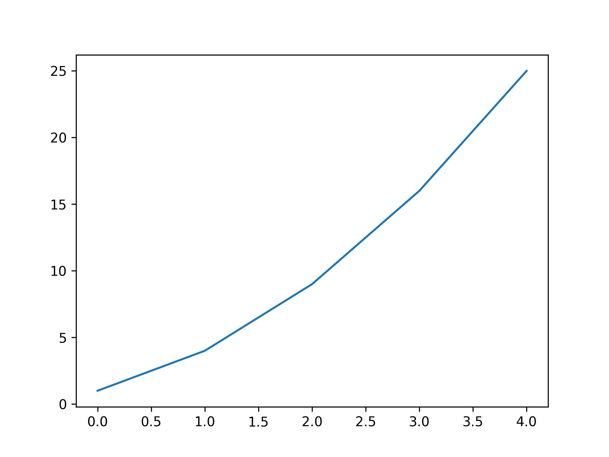

Python Programming
Lecture 12 Data Visualization
12.1 Data Visualization
-
Plotting a Simple Line Graph
import matplotlib.pyplot as plt
squares = [1, 4, 9, 16, 25]
plt.plot(squares)
# plt.show()
plt.savefig('simple.jpg',dpi=300)

Changing the Label Type and Graph Thickness
import matplotlib.pyplot as plt
squares = [1, 4, 9, 16, 25]
plt.plot(squares, linewidth=5)
# Set chart title and label axes.
plt.title("Square Numbers", fontsize=24)
plt.xlabel("Value", fontsize=14)
plt.ylabel("Square of Value", fontsize=14)
# Set size of tick labels.
plt.tick_params(axis='both', labelsize=14)
plt.show()
Correcting the Plot
import matplotlib.pyplot as plt
input_values = [1, 2, 3, 4, 5]
squares = [1, 4, 9, 16, 25]
plt.plot(input_values, squares, linewidth=5)
plt.show()

Plotting and Styling Individual Points with scatter()
import matplotlib.pyplot as plt
plt.scatter(2, 4)
plt.show()
import matplotlib.pyplot as plt
plt.scatter(2, 4, s=200)
# Set chart title and label axes.
plt.title("Square Numbers", fontsize=24)
plt.xlabel("Value", fontsize=14)
plt.ylabel("Square of Value", fontsize=14)
# Set size of tick labels.
plt.tick_params(axis='both', which='major', labelsize=14)
plt.show()
import matplotlib.pyplot as plt
x_values = [1, 2, 3, 4, 5]
y_values = [1, 4, 9, 16, 25]
plt.scatter(x_values, y_values, s=100)
plt.show()
import matplotlib.pyplot as plt
x_values = list(range(1, 1001))
y_values = [x**2 for x in x_values]
plt.scatter(x_values, y_values, s=40)
# Set the range for each axis.
plt.axis([0, 1100, 0, 1100000])
plt.show()
plt.scatter(x_values, y_values, edgecolor='none', s=40)
plt.scatter(x_values, y_values, color='red', edgecolor='none', s=40)
plt.scatter(x_values, y_values, color=(0, 0.8, 0), edgecolor='none', s=40) #RGB
import matplotlib.pyplot as plt
x_values = list(range(1001))
y_values = [x**2 for x in x_values]
plt.scatter(x_values, y_values, c=y_values, cmap=plt.cm.Blues,
edgecolor='none', s=40)
plt.show()
Random Walks
from random import choice
class RandomWalk():
def __init__(self, num_points=5000):
self.num_points = num_points
self.x_values = [0]
self.y_values = [0]
#continue
def fill_walk(self):
while len(self.x_values) < self.num_points:
x_direction = choice([1, -1])
x_distance = choice([0, 1, 2, 3, 4])
x_step = x_direction * x_distance
y_direction = choice([1, -1])
y_distance = choice([0, 1, 2, 3, 4])
y_step = y_direction * y_distance
if x_step == 0 and y_step == 0:
continue
next_x = self.x_values[-1] + x_step
next_y = self.y_values[-1] + y_step
self.x_values.append(next_x)
self.y_values.append(next_y)
import matplotlib.pyplot as plt
rw = RandomWalk()
rw.fill_walk()
plt.scatter(rw.x_values, rw.y_values, s=1)
plt.show()
Generating Multiple Random Walks
import matplotlib.pyplot as plt
while True:
rw = RandomWalk()
rw.fill_walk()
fig, ax = plt.subplots()
ax.scatter(rw.x_values, rw.y_values, s=15)
plt.show()
keep_running = input("Make another walk? (y/n): ")
if keep_running == 'n':
break
Styling the Walk
point_numbers = list(range(rw.num_points))
ax.scatter(rw.x_values, rw.y_values, c=point_numbers, cmap=plt.cm.Blues,
edgecolor='none', s=15)
ax.show()
rw = RandomWalk(50000)
ax.get_xaxis().set_visible(False)
ax.get_yaxis().set_visible(False)

Rolling Dice with Plotly
In Anaconda Prompt
pip install plotly
die.py
from random import randint
class Die():
def __init__(self, num_sides=6):
self.num_sides = num_sides
def roll(self):
return randint(1, self.num_sides)
die = Die()
results = []
for roll_num in range(100):
result = die.roll()
results.append(result)
print(results)
[3, 4, 1, 3, 4, 3, 4, 6, 4, 4, 1, 3, 6, 5, 2, 6, 2, 5, 4, 3, 5, 4, 2, 4, 3, 1, 2, 6, 6,
2, 3, 2, 1, 6, 6, 4, 3, 2, 3, 5, 2, 4, 3, 6, 3, 2, 1, 3, 2, 1, 4, 6, 6, 3, 3, 3, 2, 2,
6, 3, 1, 6, 3, 4, 2, 6, 4, 6, 6, 3, 5, 5, 5, 5, 5, 3, 3, 1, 3, 2, 4, 2, 3, 1, 1, 4, 4,
2, 4, 2, 5, 2, 6, 2, 5, 6, 2, 2, 6, 5]
-
Analyzing the Results
for roll_num in range(1000):
result = die.roll()
results.append(result)
frequencies = []
for value in range(1, die.num_sides+1):
frequency = results.count(value)
frequencies.append(frequency)
print(frequencies)
#[177, 187, 185, 187, 185, 179]
from plotly.graph_objs import Bar, Layout
from plotly import offline
# Visualize the results.
x_values=list(range(1,die.num_sides+1))
data=[Bar(x=x_values,y=frequencies)]
x_axis_config={'title': 'result'}
y_axis_config={'title': 'frequencies'}
my_layout=Layout(title='Rolling one D6 1000 times',
xaxis=x_axis_config, yaxis=y_axis_config)
offline.plot({'data':data,'layout':my_layout},filename='d6.html')
from plotly.graph_objs import Bar, Layout
from plotly import offline
from die import Die
# Create two D6 dice.
die_1 = Die()
die_2 = Die()
# Make some rolls, and store results in a list.
results = []
for roll_num in range(1000):
result = die_1.roll() + die_2.roll()
results.append(result)
# Analyze the results.
frequencies = []
max_result = die_1.num_sides + die_2.num_sides
for value in range(2, max_result+1):
frequency = results.count(value)
frequencies.append(frequency)
# Visualize the results.
x_values=list(range(2,max_result+1))
data=[Bar(x=x_values,y=frequencies)]
x_axis_config={'title': 'result', 'dtick':1}
y_axis_config={'title': 'frequencies'}
my_layout=Layout(title='Rolling two D6 dice 1000 times',
xaxis=x_axis_config, yaxis=y_axis_config)
offline.plot({'data':data,'layout':my_layout},filename='d6_d6.html')
Summary
- Data Visualization
- Reading: Python Crash Course, Chapter 15